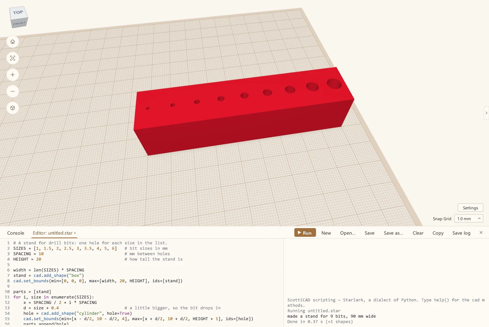
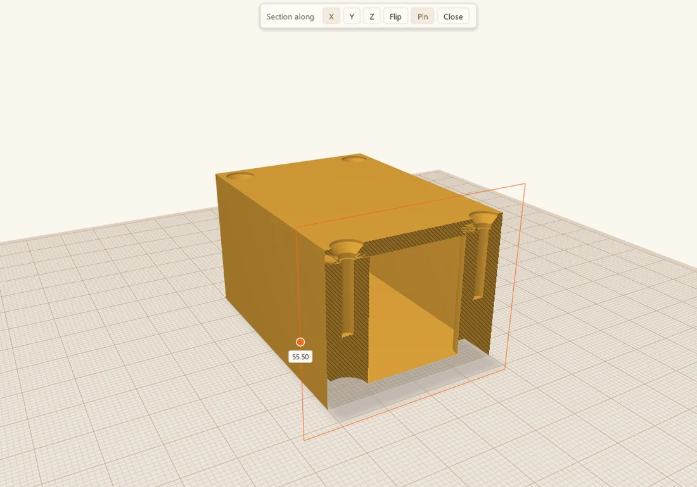
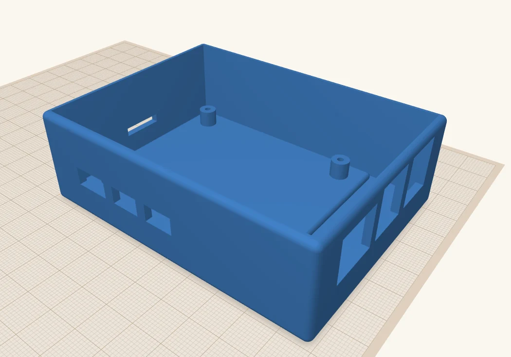
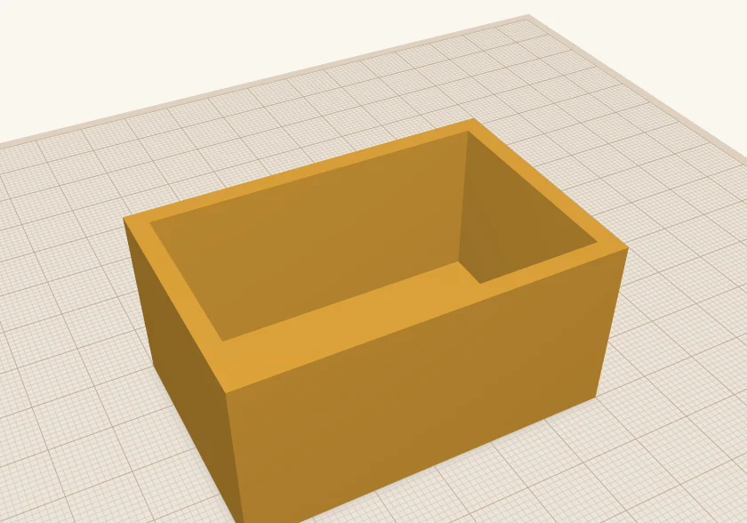

From the workshop
Scotti's Corner
Notes from Scotti, who builds ScottiCAD: why it works the way it does, how to get more out of it, and the odd project along the way.

Your first ScottiCAD script
Get started by writing your very first script in ScottiCAD. Its scripting language is a variant of Python with a gentle learning curve that even novices can use to make parametric models.
Read the post
Putting text on your 3D prints
Sometimes you want to add labels, part numbers or a version indicator to a 3D print. This post shows how to do it, raised or engraved, helps you pick a font, and gives you some guidelines on font size.
Read the post
Three tools for people who actually print
Look inside a part, lay it flat for printing, and see what it'll cost in filament, all without leaving the CAD program.
Read the post
Raspberry Pi mounts that line up the first time
Standoffs, a plate, and a see-through Pi on top that shows exactly where every port goes. Then I drop it in a case and let it cut the openings for me.
Read the post
How I build a project box
The project box from my first post, step by step: a box, a hole, a lid, four screw posts, and countersunk holes for M3 screws.
Read the post
Why I wrote ScottiCAD
My designs lived in somebody else's cloud, until an update broke half a dozen of them. So I built a CAD program that runs on my own computer.
Read the post